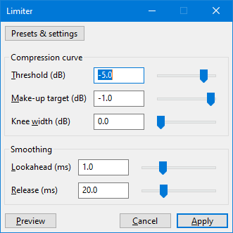

Limiter
Note carefully that when you apply an effect to a time-stretched clip the changed speed of the clip will be automatically rendered.
|
- Accessed by:
- 
Affinities with the Compressor
Audacity's compressor and limiter use the same processing technology. Albeit similar, the two effects are typically used for different mastering purposes. Compressors tend to come at an earlier mastering stage: they are softer and more often used for aesthetic purposes rather than merely for loudness maximization. Limiters are usually the last stage of mastering and useful to gain a last few more decibels of loudness without changing any other aspect of the mix.
This explains why some settings differ between the two. Also, this page may refer to other manual pages that were written with the compressor in mind but which still are very relevant to the limiter.
Controls
Compression curve
- Threshold: The input level above which limiting is applied to the audio. Contrary to the Compressor, modifying the threshold does not modify the ceiling (make-up target remains unchanged). One can imagine the effect of changing threshold as moving the compression curve left-right.
- Make-up target: The maximal output level. If all time smoothing settings and knee width are zero, all input samples above the threshold are clipped to this value. One can imagine the effect of changing make-up gain as moving the compression curve up-down.
- Knee width: How "sharp" the threshold is. At a knee width of 0dB, the limiter immediately engages at full power once the threshold is hit. When the knee width is wider, some compression will get applied before the threshold, making the transition into a fully limited signal softer.
More information on the controls can be found in the Compressor curve page.
Smoothing
- Lookahead: How much time the effect has to work with. If set to a higher number, the limiter will be able to "see" incoming spikes in volume and start softly transition into them. A higher lookahead increases latency of the effect though.
- Release How soon the limiter starts to release the volume level back to normal after the level drops below the threshold. A long time value will tend to lose quiet sounds that come after loud ones, but will avoid the volume being raised too much during short quiet sections like pauses in speech.
More information on the smoothing parameters can be found in the Smoothing page.
Realtime use
Please refer to the corresponding section on the Compressor page.
Factory Presets
There are several Factory Presets for the Compressor shipped with Audacity, you can access these using the button.
This list explains some of those presets:
- Master Limiter will wonderfully and imperceptibly limit the signal level to -1 dB, while maximally preserving the dynamics and sound of the source.
- SFX Limiter will limit the signal level to -1 dB of sharp sounds while maintaining the dynamics and sound of the source
- This preset works well together with the Great Impact and Climax Impulse presets in Compressor.
- VO Limiter is for dialogs, podcasts and everything else that has to do with voice.